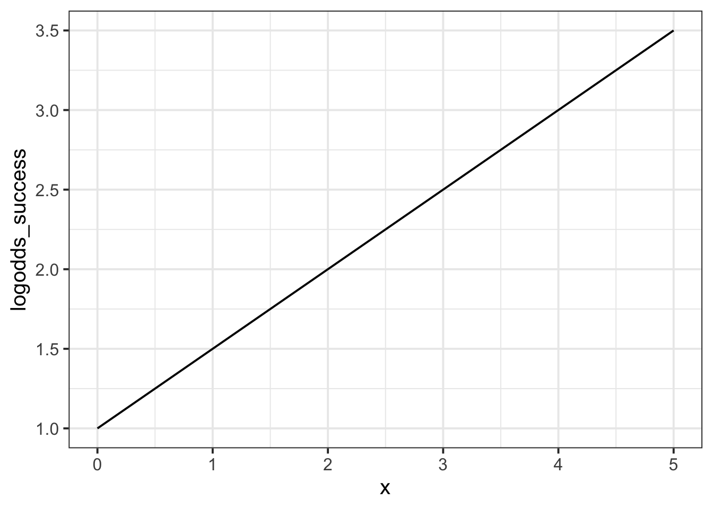
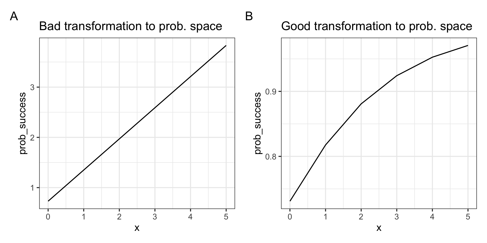

p_logistic <- tibble(
logodds = seq(-5, 5, length.out = 100),
prob = plogis(logodds)
) |>
ggplot(aes(x = logodds, y = prob)) +
geom_line() +
labs(
y = 'Probability',
x = 'Log-odds'
) +
ggtitle('The logistic function')
p_logistic16: Probabilities and log-odds
In this lab, you’ll practice transforming probabilities into log-odds as well as log-odds into probabilities.
You’ll also work through an example that aims to show you why transforming the slope of a line from log-odds into probabilities leads to mathematically impossible predictions.
NoteGet set up
- Create a new .Rmd file for this week’s exercises.
- Save it somewhere you can find it again.
- Give it a clear name (for example,
dapr2_lab16.Rmd). - In the first code chunk, load the packages you’ll need this week:
tidyverse
Question 1
Copy and run the following code to generate for yourself a plot of the logistic function.
You’ll use this plot in the next few questions.
(Optional: To find out what a given line of code does, you can comment it out and try running the code chunk again.)
Converting probabilities to log-odds
Question 2
Based on the logistic curve you plotted in Q1, guess the approximate log-odds value that corresponds to each of the following probabilities. Write down your guesses.
Probabilities:
- 33%
- 99%
- 20%
- 0%
- 100%
Question 3
Now compute the actual log-odds value for each probability given in Q2.
If any of your guesses were really different from the actual log-odds, why do you think that is?
🗂️ See TODO probs and log-odds flash cards.
Question 4
Try running the following three lines of code. They will fail to return sensible log-odds values.
Explain why each line fails.
qlogis(-0.5)
qlogis(1.5)
qlogis(100)
Converting log-odds to probabilities
Question 5
Based on the logistic curve you plotted in Q1, guess the approximate probability value that corresponds to each of the following log-odds. Write down your guesses.
Log-odds:
- 0.5
- –0.5
- 10
- –10
- 4
Question 6
Now compute the actual probabilities for each log-odds value given in Q2.
If any of your guesses were really different from the actual probability, why do you think that is?
🗂️ See TODO probs and log-odds flash cards.
Question 7
Can you find any input values that cause plogis() to fail?
If you do find some values, which are they, and why do they make plogis() fail?
If you cannot find any such values, why are there no values that make plogis() fail?
Why we can’t back-transform slopes from log-odds space to probability space
Question 8
Imagine a line in log-odds space which has an intercept of 1 and a slope of 0.5. Here’s a plot of that line:
Code
tibble(
x = 0:5,
logodds_success = 1 + 0.5 * x
) |>
ggplot(aes(x = x, y = logodds_success)) +
geom_line()
Now, imagine doing the wrong thing and back-transforming both model coefficients from log-odds space to probability space. This is a “proof by contradiction”: we’ll intentionally do the wrong thing and see how it leads us to nonsense results.
- For the intercept,
plogis(1)= 0.73. - For the slope,
plogis(0.5)= 0.62.
The linear expression for this model is \(y = 0.73 + 0.62 \cdot x\).
What outcome value (i.e., \(y\) value) does this model predict for \(x = 0\)? for \(x = 1\)? for \(x=2\)?
Question 9
Our goal is for the outcome values of this model to be probabilities: the probability of success.
Are the outcome values you computed in Q8 possible probabilities?
Question 10
Below are two plots.
Plot A (left) shows the intentionally wrong way we tried to convert the log-odds line into probability space: by transforming each parameter individually to end up with \(y = 0.73 + 0.62 \cdot x\).
Plot B (right) shows the correct way of converting the log-odds line into probability space.
Code
p_prob_bad <- tibble(
x = 0:5,
prob_success = 0.73 + 0.62 * x
) |>
ggplot(aes(x = x, y = prob_success)) +
geom_line() +
ggtitle('Bad transformation to prob. space')
p_prob_good <- tibble(
x = 0:5,
logodds_success = 1 + 0.5 * x,
prob_success = plogis(logodds_success)
) |>
ggplot(aes(x = x, y = prob_success)) +
geom_line() +
ggtitle('Good transformation to prob. space')
p_prob_bad + p_prob_good + plot_annotation(tag_levels = 'A')
Notice that we get the same value in both plots when \(x = 0\): the probability is indeed 0.73 = plogis(1). So transforming the intercept alone is okay!
Based on these two plots, try to explain in your own words why transforming the slope directly is not a mathematically appropriate way to convert a line in log-odds space into probability space.